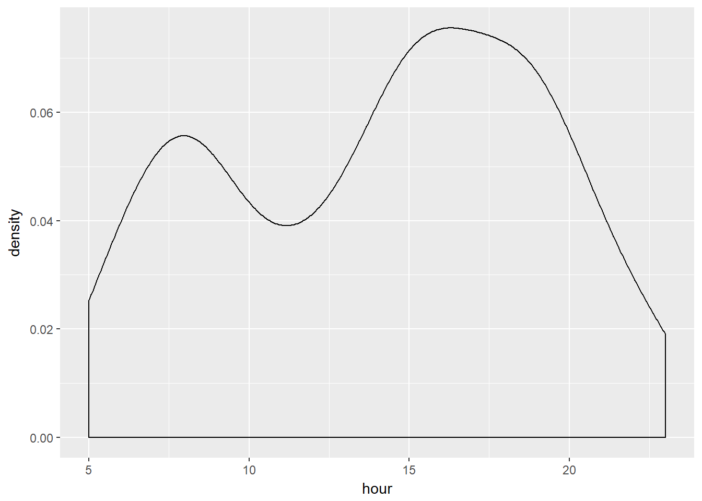
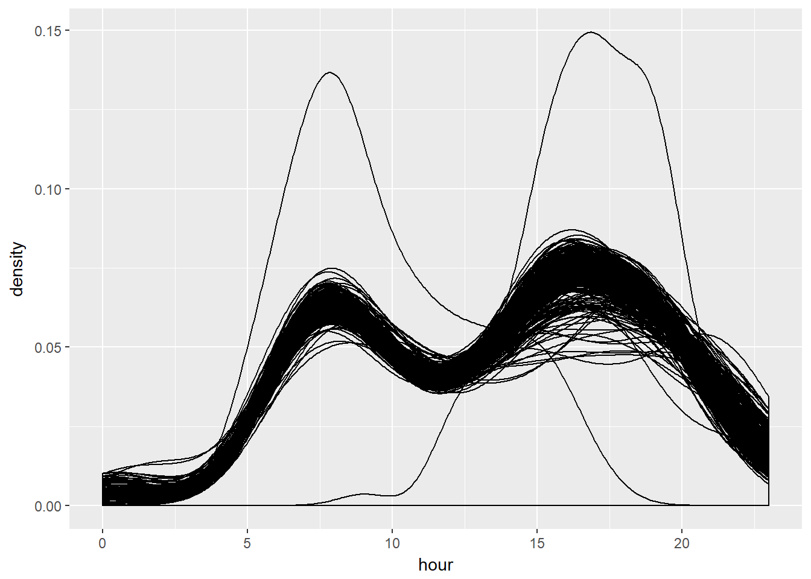
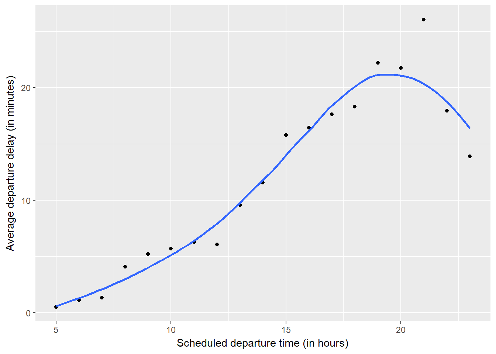
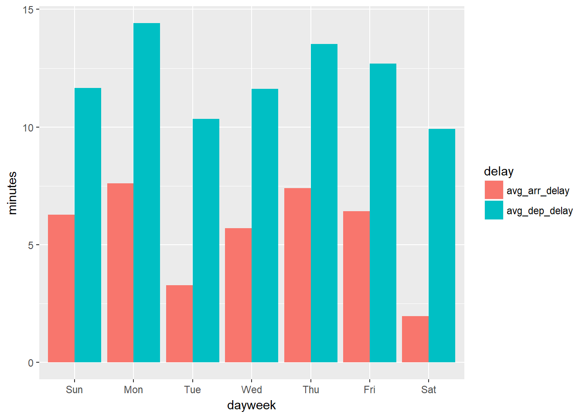
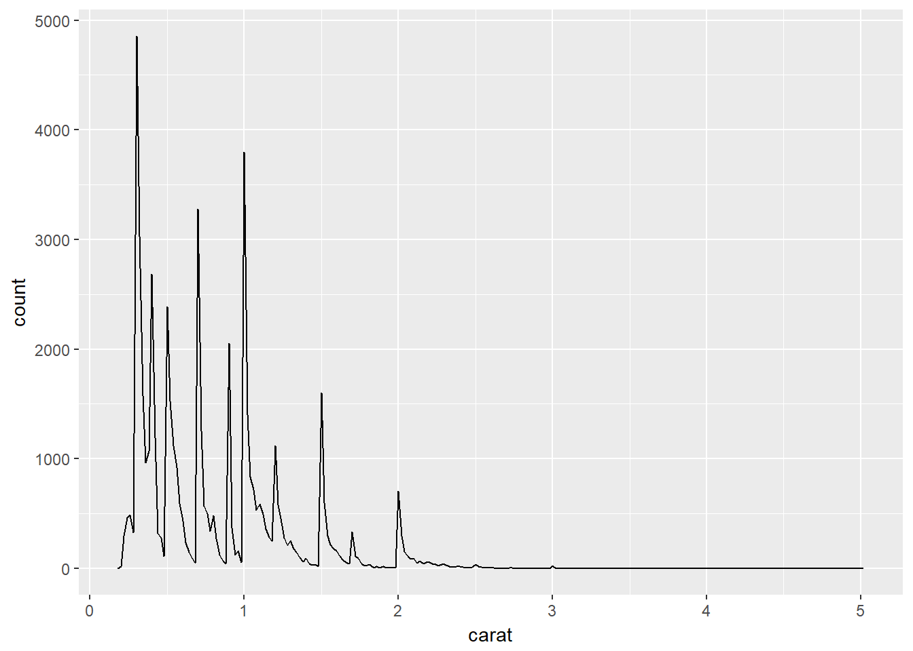
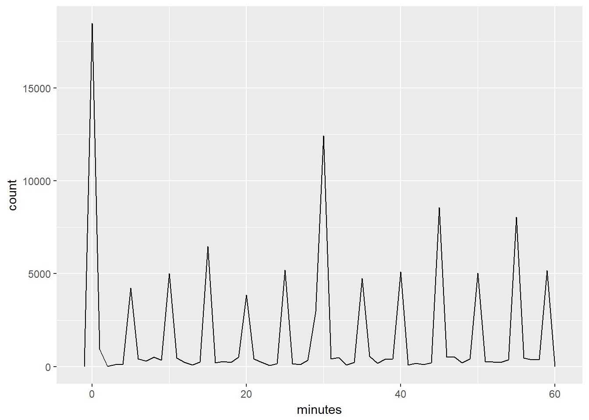
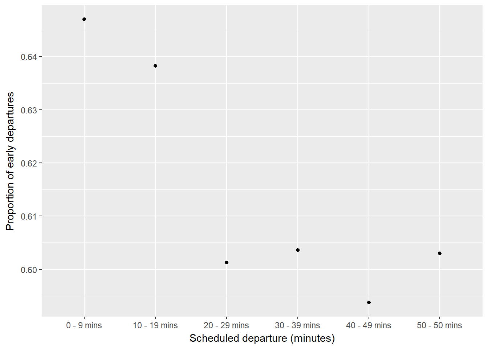

16 Dates and times
16.1 Introduction
No exercises.
16.2 Creating date/times
16.2.1 Exercises
library(tidyverse)
library(lubridate)
library(nycflights13)1 - What happens if you parse a string that contains invalid dates?
ymd(c("2010-10-10", "bananas"))## Warning: 1 failed to parse.## [1] "2010-10-10" NAIt will return NA.
2 - What does the tzone argument to today() do? Why is it important?
tzone specifies which time zone you would like to find the current date of. It is important the dates of two different places in different timzones can differ.
3 - Use the appropriate lubridate function to parse each of the following dates:
d1 <- "January 1, 2010"
mdy(d1)## [1] "2010-01-01"d2 <- "2015-Mar-07"
ymd(d2)## [1] "2015-03-07"d3 <- "06-Jun-2017"
dmy(d3)## [1] "2017-06-06"d4 <- c("August 19 (2015)", "July 1 (2015)")
mdy(d4)## [1] "2015-08-19" "2015-07-01"d5 <- "12/30/14" # Dec 30, 2014
mdy(d5)## [1] "2014-12-30"16.3 Date-time components
16.3.1 Exercises
We use the flights_dt dataset (code is provided in the book) for the remaining exercises.
make_datetime_100 <- function(year, month, day, time) {
make_datetime(year, month, day, time %/% 100, time %% 100)
}
flights_dt <- flights %>%
filter(!is.na(dep_time), !is.na(arr_time)) %>%
mutate(
dep_time = make_datetime_100(year, month, day, dep_time),
arr_time = make_datetime_100(year, month, day, arr_time),
sched_dep_time = make_datetime_100(year, month, day, sched_dep_time),
sched_arr_time = make_datetime_100(year, month, day, sched_arr_time)
) %>%
select(origin, dest, ends_with("delay"), ends_with("time"))1 - How does the distribution of flight times within a day change over the course of the year?
A distribution of flight times (departure by the hours) within a day looks something like this:
flights_dt %>%
mutate(date = make_date(year(dep_time),
month(dep_time),
mday(dep_time)),
hour = hour(dep_time)) %>%
group_by(date, hour) %>%
filter(date == '2013-01-01') %>%
ggplot(mapping = aes(x = hour)) +
geom_density()
If we want to visualize the whole year:
flights_dt %>%
mutate(date = make_date(year(dep_time),
month(dep_time),
mday(dep_time)),
hour = hour(dep_time)) %>%
group_by(date, hour) %>%
ggplot(mapping = aes(x = hour, group = date)) +
geom_density(alpha = .1)
We see that the distributions for most days are very much the same.
2 - Compare dep_time, sched_dep_time and dep_delay. Are they consistent? Explain your findings.
Let’s check if there are any inconsistent records:
flights_dt %>% select(contains('dep')) %>%
mutate(cal_delay = as.numeric(dep_time - sched_dep_time) / 60) %>%
filter(dep_delay != cal_delay)## # A tibble: 810 x 5
## dep_delay pre_dep_delay dep_time sched_dep_time
## <dbl> <dbl> <dttm> <dttm>
## 1 853 - 5.00 2013-01-01 08:48:00 2013-01-01 18:35:00
## 2 43.0 - 3.00 2013-01-02 00:42:00 2013-01-02 23:59:00
## 3 156 43.0 2013-01-02 01:26:00 2013-01-02 22:50:00
## 4 33.0 - 5.00 2013-01-03 00:32:00 2013-01-03 23:59:00
## 5 185 33.0 2013-01-03 00:50:00 2013-01-03 21:45:00
## 6 156 185 2013-01-03 02:35:00 2013-01-03 23:59:00
## 7 26.0 - 10.0 2013-01-04 00:25:00 2013-01-04 23:59:00
## 8 141 26.0 2013-01-04 01:06:00 2013-01-04 22:45:00
## 9 15.0 - 1.00 2013-01-05 00:14:00 2013-01-05 23:59:00
## 10 127 15.0 2013-01-05 00:37:00 2013-01-05 22:30:00
## # ... with 800 more rows, and 1 more variable: cal_delay <dbl>These inconsistent records have one thing in common. The dep_delay tells us the flights were delayed, but cal_delay tells us the flights departed early. The reason is that these delayed flights actually departed on the next day, and were not reflected in dep_time. If we add one day to the dep_time, the results should be consistent.
flights_dt %>% select(contains('dep')) %>%
mutate(cal_delay = as.numeric(dep_time - sched_dep_time) / 60) %>%
filter(dep_delay != cal_delay) %>%
mutate(dep_time = update(dep_time, mday = mday(dep_time) + 1)) %>%
mutate(cal_delay = as.numeric(dep_time - sched_dep_time)) %>%
filter(dep_delay != cal_delay)## # A tibble: 0 x 5
## # ... with 5 variables: dep_delay <dbl>, pre_dep_delay <dbl>,
## # dep_time <dttm>, sched_dep_time <dttm>, cal_delay <dbl>All records are now consistent.
3 - Compare air_time with the duration between the departure and arrival. Explain your findings. (Hint: consider the location of the airport.)
To Do.
4 - How does the average delay time change over the course of a day? Should you use dep_time or sched_dep_time? Why?
We should use sched_dep_time because it will tell us how much delay we should expect at the scheduled departure time.
flights_dt %>%
mutate(hour = hour(sched_dep_time)) %>%
group_by(hour) %>%
summarize(avg_dep_delay = mean(dep_delay, na.rm = TRUE)) %>%
ggplot(mapping = aes(x = hour, y = avg_dep_delay)) +
geom_point() +
geom_smooth(se = FALSE) +
labs(y = "Average departure delay (in minutes)",
x = "Scheduled departure time (in hours)")## `geom_smooth()` using method = 'loess'
5 - On what day of the week should you leave if you want to minimise the chance of a delay?
flights_dt %>%
mutate(dayweek = wday(sched_dep_time, label = TRUE)) %>%
group_by(dayweek) %>%
summarize(avg_dep_delay = mean(dep_delay, na.rm = TRUE),
avg_arr_delay = mean(arr_delay, na.rm = TRUE)) %>%
gather(key = 'delay', value = 'minutes', 2:3) %>%
ggplot() +
geom_col(mapping = aes(x = dayweek, y = minutes, fill = delay),
position = 'dodge')
It looks like Saturdays are the best days to fly.
6 - What makes the distribution of diamonds$carat and flights$sched_dep_time similar?
In the distribution of diamonds$carat, we can see there are peaks at rounded numbers, like 0.3, 0.4, 0.5, 0.9, 1.0, 1.5, and 2.0.
diamonds %>%
ggplot() +
geom_freqpoly(mapping = aes(x = carat), binwidth = .02)
In distribution of flights_dt%sched_dep_time, again we see peaks at rounded or nice numbers, such as 0, 5, 10, 15, etc.
flights_dt %>%
mutate(minutes = minute(sched_dep_time)) %>%
ggplot() +
geom_freqpoly(mapping = aes(x = minutes), binwidth = 1)
As the book suggests, these are most likely cuased by human factors, namely the convenience in representing nice, rounded numbers.
7 - Confirm my hypothesis that the early departures of flights in minutes 20-30 and 50-60 are caused by scheduled flights that leave early. Hint: create a binary variable that tells you whether or not a flight was delayed.
flights_dt %>%
mutate(delayed = dep_delay > 0,
minutes = minute(sched_dep_time) %/% 10 * 10,
minutes = factor(minutes, levels = c(0,10,20,30,40,50),
labels = c('0 - 9 mins',
'10 - 19 mins',
'20 - 29 mins',
'30 - 39 mins',
'40 - 49 mins',
'50 - 50 mins'))) %>%
group_by(minutes) %>%
summarize(prop_early = 1 - mean(delayed, na.rm = TRUE)) %>%
ggplot() +
geom_point(mapping = aes(x = minutes, y = prop_early)) +
labs(x = 'Scheduled departure (minutes)',
y = 'Proportion of early departures')
16.4 Time spans
16.4.1 Exercises
1 - Why is there months() but no dmonths()?
Months do not have a fixed duration in seconds, unlike days, weeks, and years, because there are months with 28, 29, 30, and 31 days.
2 - Explain days(overnight \* 1) to someone who has just started learning R. How does it work?
overnight is a boolean variable. If arr_time is less than dep_time, then the flight arrives on the next day, and overnight is TRUE; otherise, FALSE. Actually, the underlying value of TRUE is 1, and FALSE is 0, so the * 0 can actually be omitted.
If overnight is TRUE, or 1, days(overnight) will add one day to the arr_time and sched_arr_time datetime.
flights_dt %>%
mutate(
overnight = arr_time < dep_time,
arr_time = arr_time + days(overnight),
sched_arr_time = sched_arr_time + days(overnight)
)## # A tibble: 109,284 x 12
## origin dest dep_delay arr_delay pre_dep_delay dep_time
## <chr> <chr> <dbl> <dbl> <dbl> <dttm>
## 1 JFK MIA 2.00 33.0 0 2013-01-01 05:42:00
## 2 JFK BQN - 1.00 -18.0 2.00 2013-01-01 05:44:00
## 3 JFK MCO - 3.00 - 8.00 - 1.00 2013-01-01 05:57:00
## 4 JFK PBI - 2.00 - 2.00 - 3.00 2013-01-01 05:58:00
## 5 JFK TPA - 2.00 - 3.00 - 2.00 2013-01-01 05:58:00
## 6 JFK LAX - 2.00 7.00 - 2.00 2013-01-01 05:58:00
## 7 JFK BOS 0 - 4.00 - 2.00 2013-01-01 05:59:00
## 8 JFK ATL - 4.00 - 8.00 0 2013-01-01 06:06:00
## 9 JFK SFO 11.0 14.0 - 4.00 2013-01-01 06:11:00
## 10 JFK RSW 3.00 4.00 11.0 2013-01-01 06:13:00
## # ... with 109,274 more rows, and 6 more variables: sched_dep_time <dttm>,
## # arr_time <dttm>, sched_arr_time <dttm>, air_time <dbl>,
## # flight_time <dbl>, overnight <lgl>3 - Create a vector of dates giving the first day of every month in 2015. Create a vector of dates giving the first day of every month in the current year.
make_date(year = 2015, month = 1:12, day = 1)## [1] "2015-01-01" "2015-02-01" "2015-03-01" "2015-04-01" "2015-05-01"
## [6] "2015-06-01" "2015-07-01" "2015-08-01" "2015-09-01" "2015-10-01"
## [11] "2015-11-01" "2015-12-01"make_date(year = year(today()), month = 1:12, day = 1)## [1] "2018-01-01" "2018-02-01" "2018-03-01" "2018-04-01" "2018-05-01"
## [6] "2018-06-01" "2018-07-01" "2018-08-01" "2018-09-01" "2018-10-01"
## [11] "2018-11-01" "2018-12-01"4 - Write a function that given your birthday (as a date), returns how old you are in years.
howold <- function(d) {
age <- today() - d
return(floor(age/dyears(1)))
}
howold(ymd(19860701))## [1] 315 - Why can’t (today() %--% (today() + years(1))) / months(1) work?
It works?
(today() %--% (today() + years(1))) / months(1)## [1] 12The interval is defined as starting from today to a year from today, and there are 12 months in between.
16.5 Time zones
No exercises.